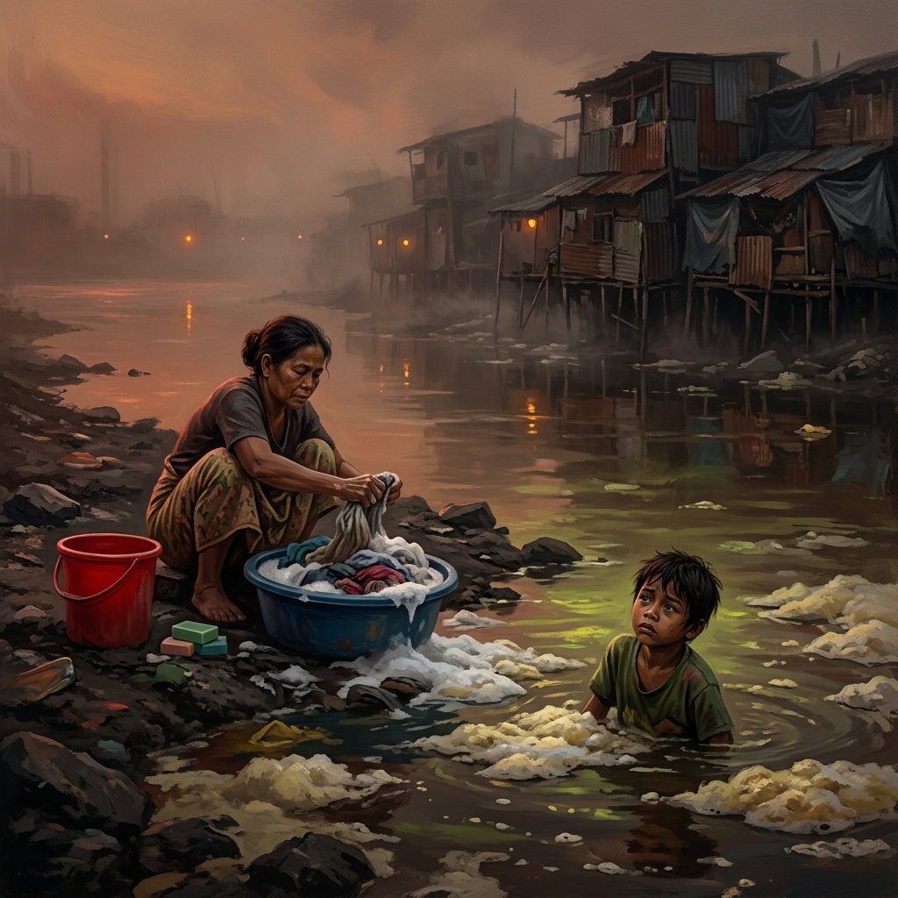
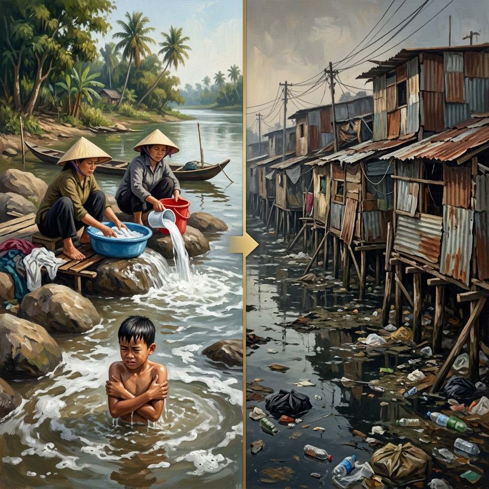
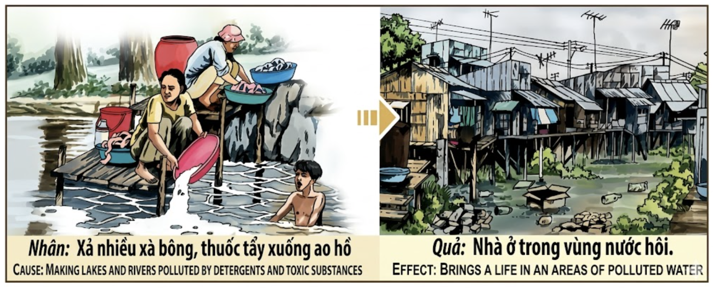

El Río que RecuerdaThe River that RemembersIl Fiume che Ricorda记忆之河النهر الذي يتذكرРека, которая помнитDer Fluss, der sich erinnertLe Fleuve qui se Souvient記憶する川O Rio que RecordaDòng Sông Nhớ Mãi
El agua tiene memoria. Cada gota de jabón vertida en el río sin pensar, cada litro de lejía arrojado al lago como si fuera un vertedero sin dueño, queda registrado en la corriente invisible del karma. Y quien envenenó el agua que otros bebían, en esta vida o en otra, despertará un día rodeado de agua que no puede beber. Water has memory. Every drop of soap poured thoughtlessly into the river, every liter of bleach thrown into the lake as if it were an ownerless dump, is recorded in karma's invisible current. And whoever poisoned the water others drank will, in this life or another, awaken one day surrounded by water unfit to drink. L'acqua ha memoria. Ogni goccia di sapone versata senza pensare nel fiume, ogni litro di candeggina gettato nel lago come in una discarica senza padrone, viene registrato nella corrente invisibile del karma. Chi avvelenò l'acqua che altri bevevano, in questa vita o in un'altra, si sveglierà un giorno circondato da acqua che non può bere. 水有记忆。每一滴不假思索倒入河中的肥皂水，每一升丢入湖中的漂白剂，都被记录在业力的无形之流中。谁毒害了他人饮用的水，在今生或来世，终将有一天醒来，被无法饮用的水包围。 للماء ذاكرة. كل قطرة صابون صُبّت في النهر دون تفكير، كل لتر مبيّض أُلقي في البحيرة كأنها مكبّ بلا صاحب، يُسجَّل في تيار الكارما الخفي. ومن سمّم الماء الذي شربه الآخرون سيستيقظ يوماً محاطاً بماء لا يُشرب. У воды есть память. Каждая капля мыла, бездумно вылитая в реку, каждый литр отбеливателя, сброшенный в озеро, записывается в невидимом течении кармы. Кто отравил воду, которую пили другие, в этой жизни или иной проснётся однажды, окружённый водой, которую невозможно пить. Wasser hat Gedächtnis. Jeder Tropfen Seife, der gedankenlos in den Fluss gegossen wird, jeder Liter Bleichmittel, der in den See geworfen wird, wird in Karmas unsichtbarer Strömung verzeichnet. Wer das Wasser vergiftete, das andere tranken, wird eines Tages von Wasser umgeben erwachen, das nicht trinkbar ist. L'eau a une mémoire. Chaque goutte de savon versée sans réfléchir dans la rivière, chaque litre de javel jeté dans le lac, est enregistré dans le courant invisible du karma. Celui qui empoisonna l'eau que d'autres buvaient s'éveillera un jour entouré d'eau qu'il ne pourra boire. 水には記憶があります。何も考えずに川に流した石鹸の一滴一滴、持ち主のないゴミ捨て場のように湖に投げ込んだ漂白剤、それらすべてがカルマの見えない流れに記録されます。他者が飲む水を毒した者は、今生か来世で、飲めない水に囲まれて目覚めるでしょう。 A água tem memória. Cada gota de sabão vertida sem pensar no rio, cada litro de lixívia atirado ao lago, fica registado na corrente invisível do karma. Quem envenenou a água que outros bebiam acordará um dia rodeado de água que não pode beber. Nước có trí nhớ. Mỗi giọt xà bông xả xuống sông mà không suy nghĩ, mỗi lít thuốc tẩy đổ xuống hồ như thể đó là bãi rác vô chủ, đều được ghi lại trong dòng chảy vô hình của nhân quả. Và ai đầu độc nguồn nước người khác uống, ở kiếp này hay kiếp sau, sẽ có ngày tỉnh dậy giữa bốn bề nước thối không thể uống được.
Contaminar el agua es, en la gramática del karma, uno de los actos más graves que un ser humano puede cometer, porque el agua no es una posesión: es un préstamo sagrado que la naturaleza nos hace a todos. Quien vierte detergente, lejía o químicos en un río o un lago no está simplemente ensuciando su propiedad — está envenenando algo que pertenece a todos los seres vivos, desde el pez que necesita respirar hasta el niño que necesita bañarse, desde la raíz del árbol hasta el vientre de la mujer embarazada que beberá esa agua río abajo sin saber lo que contiene. El acto parece pequeño: un cubo de jabón, un barreño de ropa sucia, un gesto cotidiano que se repite mil veces sin reflexión. Pero el karma mide con la escala de las consecuencias, no con la escala de las intenciones.
La retribución kármica por contaminar el agua sigue una simetría espejo tan precisa que parece diseñada por un arquitecto cruel: quien envenenó el agua limpia de otros será condenado a vivir rodeado de agua envenenada. Su hogar será una chabola de chapa oxidada sobre pilotes clavados en un lodazal pestilente. Los cables eléctricos colgarán como serpientes sobre su techo. La basura flotará bajo su suelo. Y cada mañana, al despertar, sentirá ese olor — el olor del agua que él mismo pudrió en otra vida, devuelto ahora como el aire que respira. No es castigo arbitrario: es la ley del espejo. Ensuciaste lo que era de todos; ahora vivirás en la suciedad que nadie limpia.
Polluting water is, in karma's grammar, one of the gravest acts a human being can commit, because water is not a possession: it is a sacred loan that nature makes to all living things. Whoever dumps detergent, bleach, or chemicals into a river or lake is not merely dirtying their property—they are poisoning something that belongs to every living being, from the fish that needs to breathe to the child who needs to bathe, from the tree's root to the womb of the pregnant woman who will drink that water downstream without knowing what it contains.
The karmic retribution for polluting water follows a mirror symmetry so precise it seems designed by a cruel architect: whoever poisoned others' clean water will be condemned to live surrounded by poisoned water. Their home will be a rusted corrugated shack on stilts driven into a fetid swamp. Electrical wires will hang like serpents above their roof. Trash will float beneath their floor. And every morning upon waking, they will smell that odor—the smell of the water they themselves rotted in another life, returned now as the very air they breathe.
Inquinare l'acqua è, nella grammatica del karma, uno degli atti più gravi. L'acqua non è un possesso: è un prestito sacro della natura. Chi versa detersivo, candeggina o sostanze chimiche in un fiume avvelena qualcosa che appartiene a tutti gli esseri viventi.
La retribuzione karmica segue una simmetria speculare: chi avvelenò l'acqua pulita vivrà circondato da acqua avvelenata. La sua casa sarà una baracca di lamiera arrugginita su palafitte in un pantano fetido. I rifiuti gli galleggeranno sotto i piedi. Ogni mattina sentirà l'odore dell'acqua che lui stesso fece marcire in un'altra vita.
污染水源是业力语法中最严重的行为之一，因为水不是财产：它是大自然给予所有生命的神圣借贷。往河流或湖泊中倾倒洗涤剂、漂白剂或化学物质的人，不只是弄脏了自己的财产——他是在毒害属于所有生灵的东西。
污染水的业力报应遵循精确的镜像对称：谁毒害了别人的干净水源，就注定生活在受污染的水包围之中。他的家将是锈蚀铁皮搭建在恶臭泥沼上的棚户。每天早晨醒来，他都会闻到那种气味——他自己在前世腐蚀的水的气味，如今作为他呼吸的空气回来了。
تلويث الماء هو في قواعد الكارما من أشد الأعمال خطورة، لأن الماء ليس ملكية بل قرض مقدس من الطبيعة لجميع الكائنات الحية. من يلقي المنظفات أو المبيّضات في نهر أو بحيرة يسمّم شيئاً يخصّ كل كائن حي.
الجزاء الكارمي يتبع تماثلاً مرآوياً دقيقاً: من سمّم ماء الآخرين النظيف سيعيش محاطاً بماء مسموم. بيته كوخ من صفيح صدئ على أعمدة في مستنقع نتن. كل صباح سيشمّ رائحة الماء الذي أفسده هو في حياة سابقة.
Загрязнение воды — один из тяжелейших поступков в грамматике кармы, ибо вода — не собственность, а священный заём природы всем живым существам. Кто сбрасывает моющие средства или химикаты в реку, отравляет то, что принадлежит каждому: от рыбы до ребёнка.
Кармическое воздаяние следует зеркальной симметрии: кто отравил чистую воду других, будет осуждён жить в отравленной воде. Его дом — ржавая лачуга на сваях в зловонном болоте. Каждое утро он будет вдыхать запах воды, которую сам испортил в прошлой жизни.
Wasserverschmutzung ist in Karmas Grammatik eine der schwersten Taten. Wasser ist kein Besitz — es ist ein heiliges Darlehen der Natur an alle Lebewesen. Wer Waschmittel oder Chemikalien in einen Fluss kippt, vergiftet etwas, das jedem gehört.
Die karmische Vergeltung folgt einer Spiegelsymmetrie: Wer sauberes Wasser vergiftete, wird verurteilt, von vergiftetem Wasser umgeben zu leben. Sein Zuhause wird eine verrostete Blechhütte auf Stelzen in einem stinkenden Sumpf sein. Jeden Morgen wird er den Geruch des Wassers riechen, das er selbst in einem anderen Leben verderben ließ.
Polluer l'eau est, dans la grammaire du karma, l'un des actes les plus graves. L'eau n'est pas une possession : c'est un prêt sacré de la nature à tous les êtres vivants. Quiconque déverse détergents ou produits chimiques dans une rivière empoisonne quelque chose qui appartient à tous.
La rétribution karmique suit une symétrie miroir : qui empoisonna l'eau propre vivra entouré d'eau empoisonnée. Sa demeure sera une baraque de tôle rouillée sur pilotis au-dessus d'un marécage fétide. Et chaque matin, il sentira l'odeur de l'eau qu'il fit pourrir dans une autre vie.
水を汚染することは、カルマの文法において最も重大な行為の一つです。水は所有物ではありません——すべての生き物に対する自然の神聖な貸し付けです。川や湖に洗剤や漂白剤を流す者は、すべての生命に属するものを毒しています。
水汚染に対するカルマの報いは、鏡のような対称性に従います。他者の清らかな水を毒した者は、毒された水に囲まれて生きることを運命づけられます。悪臭を放つ沼の上に立つ錆びたトタン小屋が彼の家となるでしょう。毎朝、前世で自ら腐らせた水の臭いを嗅ぐことになります。
Poluir a água é, na gramática do karma, um dos actos mais graves. A água não é uma posse — é um empréstimo sagrado da natureza a todos os seres vivos. Quem despeja detergente ou químicos num rio envenena algo que pertence a todos.
A retribuição kármica segue uma simetria espelho precisa: quem envenenou a água limpa viverá rodeado de água envenenada. A sua casa será um barracão de chapa oxidada sobre estacas num pântano fétido. Cada manhã sentirá o cheiro da água que ele mesmo corrompeu noutra vida.
Ô nhiễm nguồn nước là, trong ngữ pháp nhân quả, một trong những hành động nghiêm trọng nhất mà con người có thể gây ra, bởi nước không phải tài sản của riêng ai — nó là khoản vay thiêng liêng mà thiên nhiên dành cho tất cả sinh linh. Ai xả xà bông, thuốc tẩy hay hóa chất xuống sông hồ không chỉ đang làm bẩn tài sản riêng — họ đang đầu độc thứ thuộc về mọi sinh vật sống.
Quả báo nhân quả cho việc ô nhiễm nước tuân theo sự đối xứng gương chính xác: ai đầu độc nguồn nước sạch của người khác sẽ bị buộc sống giữa nước ô nhiễm bao quanh. Nhà họ sẽ là túp lều tôn gỉ sét trên cọc giữa bãi lầy hôi thối. Rác trôi dưới sàn nhà. Mỗi sáng thức dậy, họ sẽ ngửi thấy mùi đó — mùi của nguồn nước mà chính họ đã làm thối ở kiếp trước, giờ trở lại thành không khí họ hít thở.
El Cubo Rojo y el Río
The Red Bucket and the River
Il Secchio Rosso e il Fiume
红桶与河流
الدلو الأحمر والنهر
Красное ведро и река
Der rote Eimer und der Fluss
Le Seau Rouge et la Rivière
赤いバケツと川
O Balde Vermelho e o Rio
Cái Xô Đỏ và Dòng Sông
En un pueblo junto a un río cristalino vivían dos hermanas: Nga y Tuyết. Las dos lavaban la ropa de todo el barrio para ganarse la vida. Pero la manera en que lavaban era tan diferente como el día y la noche.
Nga era rápida y práctica. Usaba un cubo rojo que llenaba con agua del río, le echaba medio bote de lejía y tres puñados de detergente industrial, y restregaba las camisas como si les tuviera rencor. Cuando terminaba, volcaba el cubo directamente al río sin pestañear. "El río es grande", decía mientras el agua espumosa se mezclaba con la corriente. "Se lo traga todo. Para eso está." Su hijo pequeño, Phong, solía bañarse río abajo mientras ella lavaba. La espuma le llegaba a las orejas. Nga no se daba cuenta, o no quería darse cuenta.
Tuyết, en cambio, lavaba distinto. También tenía un cubo — azul, más pequeño —, pero usaba ceniza de arroz y jabón natural que ella misma fabricaba con aceite de coco. Tardaba el doble que Nga y ganaba la mitad. Los vecinos se burlaban: "¿Para qué te complicas? El río se lo lleva." Tuyết respondía siempre lo mismo: "El río no se lo lleva. El río lo recuerda. Porque todo lo que le damos al agua, el agua nos lo devuelve. Puede tardar una estación, puede tardar una vida entera, pero el agua nunca olvida."
Pasaron los años. Nga lavó más rápido, ganó más dinero, se compró una casa de ladrillo. Pero un día, el río dejó de ser cristalino. Los peces murieron primero. Luego los arrozales enfermaron. Luego la piel de los niños comenzó a picar. Y un buen día, las autoridades desviaron el cauce y el pueblo se quedó sin agua limpia. Los que habían contaminado más — Nga entre ellos — tuvieron que mudarse. ¿A dónde? Al único barrio que podían pagar: un laberinto de chabolas de chapa oxidada construidas sobre pilotes a orillas de un canal de aguas negras en las afueras de la ciudad. Los cables colgaban sobre sus cabezas. La basura flotaba bajo sus pies. Y cada noche, Nga — sentada en el umbral de su chabola con su cubo rojo vacío — olía el agua podrida que la rodeaba y recordaba las palabras de su hermana. "El río no se lo lleva. El río lo recuerda."
Tuyết, que nunca envenenó el agua, siguió viviendo junto al tramo del río que aún estaba limpio. Su nieta jugaba en la orilla, sus gallinas bebían de la corriente, y su huerto crecía con la generosidad de un agua que recordaba quién la había respetado. Un día Phong, el hijo de Nga, ya adulto y enfermo de la piel por años de contacto con agua tóxica, fue a visitar a su tía Tuyết y le preguntó: "Tía, ¿por qué tú vives junto al agua limpia y nosotros junto al agua sucia?" Y Tuyết, que nunca juzgaba, le acarició la cabeza como a un niño y le dijo: "Porque tu madre le daba al río veneno y le pedía que se lo tragara. Yo le daba ceniza y le pedía perdón. Y el río — que tiene más memoria que todos los hombres juntos — le devolvió a cada una exactamente lo que recibió."
In a village beside a crystal-clear river lived two sisters: Nga and Tuyết. Both washed the neighborhood's clothes for a living, but their methods were as different as day and night.
Nga was fast and practical. She used a red bucket filled with river water, half a bottle of bleach and three fistfuls of industrial detergent, scrubbing shirts as if she bore them a grudge. When finished, she tipped the bucket straight into the river. "The river is big," she said as the foamy water merged with the current. "It swallows everything." Her young son Phong bathed downstream. The foam reached his ears. Nga didn't notice, or didn't want to.
Tuyết washed differently. She had a blue bucket—smaller—and used rice ash and natural coconut-oil soap she made herself. She took twice as long and earned half as much. Neighbors mocked her. Tuyết always answered the same way: "The river doesn't carry it away. The river remembers. Because everything we give to the water, the water returns. It may take a season, it may take an entire lifetime, but water never forgets."
Years passed. Nga washed faster, earned more, bought a brick house. But one day the river stopped being clear. The fish died first. Then the rice paddies sickened. Then children's skin began to itch. The authorities diverted the channel and the village lost its clean water. Those who had polluted most—Nga among them—had to move. Where? To the only neighborhood they could afford: a labyrinth of rusted corrugated shacks on stilts at the edge of a black-water canal on the city's outskirts. Wires hung overhead like serpents. Trash floated underfoot. Every night, Nga sat at her shack's threshold with her empty red bucket, smelling the rotten water all around, and remembered her sister's words: "The river doesn't carry it away. The river remembers."
Tuyết, who never poisoned the water, continued living beside the stretch of river that remained clean. Her granddaughter played at the bank, her chickens drank from the current. One day Phong—Nga's son, now grown and suffering skin disease from years of toxic water—visited his aunt and asked: "Auntie, why do you live beside clean water and we beside filthy water?" Tuyết, who never judged, stroked his head like a child's and said: "Because your mother gave the river poison and asked it to swallow. I gave it ash and asked forgiveness. And the river—which has more memory than all men combined—returned to each exactly what it received."
In un villaggio accanto a un fiume cristallino vivevano due sorelle: Nga e Tuyết. Entrambe lavavano i panni di tutto il quartiere per guadagnarsi da vivere. Ma il modo in cui lavavano era diverso come il giorno e la notte.
Nga era rapida e pratica. Usava un secchio rosso che riempiva con acqua del fiume, aggiungeva mezza bottiglia di candeggina e tre pugni di detersivo industriale, e sfregava le camicie come se avesse rancore contro di loro. Quando finiva, rovesciava il secchio direttamente nel fiume senza battere ciglio. "Il fiume è grande", diceva mentre l'acqua schiumosa si mescolava alla corrente. "Inghiotte tutto. È fatto per questo." Il suo figlioletto, Phong, faceva il bagno a valle mentre lei lavava. La schiuma gli arrivava alle orecchie. Nga non se ne accorgeva, o non voleva accorgersene.
Tuyết, invece, lavava in modo diverso. Anche lei aveva un secchio — blu, più piccolo —, ma usava cenere di riso e sapone naturale che fabbricava lei stessa con olio di cocco. Impiegava il doppio del tempo di Nga e guadagnava la metà. I vicini la deridevano: "Perché ti complichi la vita? Il fiume se lo porta via." Tuyết rispondeva sempre la stessa cosa: "Il fiume non se lo porta via. Il fiume ricorda. Perché tutto ciò che diamo all'acqua, l'acqua ce lo restituisce. Può volerci una stagione, può volerci un'intera vita, ma l'acqua non dimentica mai."
Passarono gli anni. Nga lavava più veloce, guadagnava di più, si comprò una casa di mattoni. Ma un giorno il fiume smise di essere cristallino. I pesci morirono per primi. Poi le risaie si ammalarono. Poi la pelle dei bambini cominciò a prudere. Un bel giorno le autorità deviarono il corso d'acqua e il villaggio rimase senza acqua pulita. Quelli che avevano inquinato di più — Nga tra loro — dovettero trasferirsi. Dove? Nell'unico quartiere che potevano permettersi: un labirinto di baracche di lamiera arrugginita su palafitte ai bordi di un canale di acque nere nella periferia. I cavi elettrici pendevano sopra le loro teste. I rifiuti galleggiavano sotto i loro piedi. E ogni sera, Nga — seduta sulla soglia della sua baracca con il secchio rosso vuoto — sentiva l'odore dell'acqua marcia che la circondava e ricordava le parole della sorella: "Il fiume non se lo porta via. Il fiume ricorda."
Tuyết, che non aveva mai avvelenato l'acqua, continuò a vivere accanto al tratto di fiume ancora pulito. Sua nipote giocava sulla riva, le sue galline bevevano dalla corrente, e il suo orto cresceva con la generosità di un'acqua che ricordava chi l'aveva rispettata. Un giorno Phong, il figlio di Nga, ormai adulto e malato di pelle per anni di contatto con acqua tossica, andò a trovare la zia Tuyết e le chiese: "Zia, perché tu vivi accanto all'acqua pulita e noi accanto all'acqua sporca?" E Tuyết, che non giudicava mai, gli accarezzò la testa come a un bambino e gli disse: "Perché tua madre dava al fiume veleno e gli chiedeva di inghiottirlo. Io gli davo cenere e gli chiedevo perdono. E il fiume — che ha più memoria di tutti gli uomini messi insieme — ha restituito a ciascuna esattamente ciò che aveva ricevuto."
在一条清澈河流旁的村庄里，住着两姐妹：娥和雪。她们都靠给全村人洗衣服谋生，但洗衣的方式却有天壤之别。
娥动作快、讲效率。她用一个红色水桶装满河水，倒入半瓶漂白剂和三大把工业洗涤剂，像对衣服怀恨在心似地使劲搓洗。洗完后，她毫不犹豫地把桶里的水直接倒进河里。"河那么大，"她一边说着，一边看着满是泡沫的水融入水流，"什么都能吞下去。河就是干这个的。"她的小儿子阿丰常在她洗衣时跑到下游去洗澡。泡沫都漫到他耳朵了。娥没注意到——或者说，她不想注意到。
雪的洗法完全不同。她也有一个桶——蓝色的，更小——但她用的是米糠灰和自己用椰子油做的天然肥皂。她花的时间是娥的两倍，赚的钱却只有一半。邻居们嘲笑她："何必自找麻烦？河水会冲走一切的。"雪总是那样回答："河流不会带走。河流会记住。因为我们给水的一切，水都会还给我们。也许要一个季节，也许要一辈子，但水永远不会忘记。"
岁月流逝。娥洗得更快，赚了更多钱，买了一栋砖房。但有一天，河水不再清澈。鱼最先死去。然后稻田染了病。然后孩子们的皮肤开始发痒。终于有一天，政府改变了河道，村庄失去了干净的水源。那些污染最严重的人——娥就在其中——不得不搬家。搬到哪里？搬到唯一付得起房租的地方：城郊一条黑水沟旁用锈蚀铁皮搭在木桩上的棚户区迷宫。电线像蛇一样挂在头顶。垃圾在脚下漂浮。每天晚上，娥坐在棚屋门槛上，抱着空空的红色水桶，闻着四周腐臭的水味，想起了妹妹的话："河流不会带走。河流会记住。"
从未毒害过水的雪，继续住在河流仍然清澈的那一段旁。她的孙女在河岸边玩耍，她的鸡在河水中饮水，她的菜园在记得谁尊重过它的水的滋养下茁壮成长。有一天，阿丰——娥的儿子，已经长大成人，因多年接触有毒水源而饱受皮肤病之苦——来看望姨妈雪，问道："姨妈，为什么你住在干净的水边，而我们住在脏水边？"雪从不评判人，她像抚摸小孩一样摸了摸他的头，说："因为你妈妈给河流喂毒药，让它吞下去。我给它灰烬，请它原谅。而河流——它的记忆比所有人加起来都长——把每个人给的东西，原封不动地还了回来。"
في قرية بجوار نهر صافٍ كالبلور عاشت أختان: نغا وتويت. كلتاهما كانتا تغسلان ملابس الحي كله لكسب رزقهما. لكن طريقة غسلهما كانت مختلفة اختلاف الليل والنهار.
كانت نغا سريعة وعملية. تستخدم دلوًا أحمر تملؤه بماء النهر، وتضيف نصف عبوة مبيّض وثلاث قبضات من المنظّف الصناعي، وتفرك القمصان كأنها تحمل لها ضغينة. وعندما تنتهي، تقلب الدلو في النهر مباشرة دون أن ترمش. "النهر كبير"، كانت تقول والماء الرغوي يختلط بالتيار. "يبتلع كل شيء. هذا ما خُلق له." ابنها الصغير فونغ كان يستحم في المجرى أسفل النهر أثناء غسلها. كانت الرغوة تصل إلى أذنيه. نغا لم تلاحظ — أو لم تُرد أن تلاحظ.
أما تويت فكانت تغسل بطريقة مختلفة. كان لديها أيضًا دلو — أزرق وأصغر — لكنها كانت تستخدم رماد الأرز وصابونًا طبيعيًا تصنعه بنفسها من زيت جوز الهند. كانت تستغرق ضعف وقت نغا وتكسب نصف ما تكسبه. كان الجيران يسخرون: "لماذا تُعقّدين حياتك؟ النهر يأخذ كل شيء." وكانت تويت تجيب دائمًا بنفس الكلمات: "النهر لا يأخذ شيئًا. النهر يتذكر. لأن كل ما نعطيه للماء، يعيده الماء. قد يستغرق موسمًا واحدًا، وقد يستغرق حياة بأكملها، لكن الماء لا ينسى أبدًا."
مرّت السنوات. غسلت نغا أسرع، وكسبت مالًا أكثر، واشترت بيتًا من الطوب. لكن ذات يوم توقف النهر عن أن يكون صافيًا. ماتت الأسماك أولًا. ثم مرضت حقول الأرز. ثم بدأت بشرة الأطفال تحكّ. وفي يوم من الأيام حوّلت السلطات مجرى النهر وبقيت القرية بلا ماء نظيف. أولئك الذين لوّثوا أكثر — ونغا منهم — اضطروا للانتقال. إلى أين؟ إلى الحي الوحيد الذي يستطيعون تحمّل تكاليفه: متاهة من أكواخ الصفيح على أعمدة خشبية فوق قناة مياه سوداء في أطراف المدينة. الأسلاك الكهربائية تتدلى فوق رؤوسهم كأفاعٍ. القمامة تطفو تحت أقدامهم. وكل ليلة، كانت نغا — جالسة على عتبة كوخها ودلوها الأحمر الفارغ بجانبها — تشمّ رائحة الماء الفاسد المحيط بها وتتذكر كلمات أختها: "النهر لا يأخذ شيئًا. النهر يتذكر."
أما تويت التي لم تسمّم الماء قط، فظلت تعيش بجوار الجزء الذي لا يزال نظيفًا من النهر. حفيدتها تلعب على الضفة، ودجاجاتها تشرب من التيار، وحديقتها تنمو بكرم ماءٍ يتذكر من احترمه. ذات يوم جاء فونغ — ابن نغا الذي أصبح رجلًا بالغًا يعاني من أمراض جلدية بسبب سنوات من ملامسة الماء السام — لزيارة خالته تويت وسألها: "خالتي، لماذا تعيشين بجوار ماء نظيف ونحن نعيش بجوار ماء قذر؟" فتويت التي لم تحكم على أحد قط، مسحت على رأسه كطفل صغير وقالت: "لأن أمك أعطت النهر سمًا وطلبت منه أن يبتلعه. أنا أعطيته رمادًا وطلبت منه المسامحة. والنهر — الذي ذاكرته أعمق من كل البشر مجتمعين — أعاد لكل واحدة منا بالضبط ما تلقاه."
В деревне у кристально чистой реки жили две сестры: Нга и Туйет. Обе стирали бельё на весь квартал, чтобы прокормиться. Но способ, которым они стирали, различался как день и ночь.
Нга была быстрой и практичной. Она брала красное ведро, наполняла его речной водой, добавляла полбутылки отбеливателя и три горсти промышленного порошка и тёрла рубашки так, словно держала на них обиду. Закончив, выливала ведро прямо в реку, даже не моргнув. «Река большая», — говорила она, наблюдая, как мыльная вода вливалась в течение. «Всё проглотит. Она для того и создана.» Её маленький сын Фонг купался ниже по течению, пока мать стирала. Пена доходила ему до ушей. Нга этого не замечала — или не хотела замечать.
Туйет стирала иначе. У неё тоже было ведро — голубое, поменьше, — но она использовала рисовую золу и натуральное мыло, которое сама варила из кокосового масла. Она тратила вдвое больше времени и зарабатывала вдвое меньше. Соседи насмехались: «Зачем усложнять? Река всё уносит.» Туйет всегда отвечала одно и то же: «Река не уносит. Река помнит. Потому что всё, что мы отдаём воде, вода возвращает нам. Это может занять один сезон, может — целую жизнь, но вода никогда не забывает.»
Прошли годы. Нга стирала быстрее, зарабатывала больше, купила кирпичный дом. Но однажды река перестала быть прозрачной. Сначала погибла рыба. Потом заболели рисовые поля. Потом у детей начала чесаться кожа. И в один прекрасный день власти отвели русло, и деревня осталась без чистой воды. Те, кто загрязнял больше всех — Нга в их числе, — были вынуждены переехать. Куда? В единственный район, который они могли себе позволить: лабиринт лачуг из ржавого гофрированного железа на сваях у кромки канала с чёрной водой на окраине города. Провода висели над головами, словно змеи. Мусор плавал под ногами. И каждый вечер Нга — сидя на пороге своей лачуги с пустым красным ведром — вдыхала зловоние гнилой воды и вспоминала слова сестры: «Река не уносит. Река помнит.»
Туйет, которая никогда не отравляла воду, продолжала жить у чистого участка реки. Её внучка играла на берегу, куры пили из ручья, а огород рос благодаря щедрости воды, помнившей, кто её уважал. Однажды Фонг — сын Нга, уже взрослый, с больной кожей от многолетнего контакта с токсичной водой, — приехал к тёте Туйет и спросил: «Тётя, почему ты живёшь у чистой воды, а мы — у грязной?» И Туйет, которая никогда никого не судила, погладила его по голове, как ребёнка, и сказала: «Потому что твоя мать давала реке яд и просила проглотить. Я давала пепел и просила прощения. А река — у которой память длиннее, чем у всех людей вместе взятых, — вернула каждой ровно то, что получила.»
In einem Dorf an einem kristallklaren Fluss lebten zwei Schwestern: Nga und Tuyết. Beide wuschen die Wäsche der ganzen Nachbarschaft, um ihren Lebensunterhalt zu verdienen. Aber die Art, wie sie wuschen, war so verschieden wie Tag und Nacht.
Nga war schnell und praktisch. Sie benutzte einen roten Eimer, den sie mit Flusswasser füllte, gab eine halbe Flasche Bleichmittel und drei Handvoll Industriewaschmittel hinein und schrubbte die Hemden, als hätte sie einen Groll gegen sie. Wenn sie fertig war, kippte sie den Eimer ohne mit der Wimper zu zucken direkt in den Fluss. "Der Fluss ist groß", sagte sie, während das schaumige Wasser sich mit der Strömung vermischte. "Er schluckt alles. Dafür ist er da." Ihr kleiner Sohn Phong badete flussabwärts, während sie wusch. Der Schaum reichte ihm bis zu den Ohren. Nga bemerkte es nicht — oder wollte es nicht bemerken.
Tuyết hingegen wusch anders. Auch sie hatte einen Eimer — blau, kleiner —, aber sie benutzte Reisasche und Naturseife, die sie selbst aus Kokosöl herstellte. Sie brauchte doppelt so lang wie Nga und verdiente halb so viel. Die Nachbarn spotteten: "Warum machst du es dir so schwer? Der Fluss nimmt alles mit." Tuyết antwortete immer dasselbe: "Der Fluss nimmt es nicht mit. Der Fluss erinnert sich. Denn alles, was wir dem Wasser geben, gibt das Wasser uns zurück. Es kann eine Jahreszeit dauern, es kann ein ganzes Leben dauern, aber das Wasser vergisst nie."
Die Jahre vergingen. Nga wusch schneller, verdiente mehr Geld, kaufte sich ein Backsteinhaus. Aber eines Tages hörte der Fluss auf, klar zu sein. Die Fische starben zuerst. Dann wurden die Reisfelder krank. Dann begann die Haut der Kinder zu jucken. Eines Tages leiteten die Behörden den Flusslauf um, und das Dorf hatte kein sauberes Wasser mehr. Diejenigen, die am meisten verschmutzt hatten — Nga unter ihnen — mussten umziehen. Wohin? In das einzige Viertel, das sie sich leisten konnten: ein Labyrinth aus verrosteten Wellblechhütten auf Stelzen am Rand eines Schwarzwasserkanals am Stadtrand. Die Kabel hingen wie Schlangen über ihren Köpfen. Der Müll trieb unter ihren Füßen. Und jeden Abend saß Nga auf der Schwelle ihrer Hütte mit ihrem leeren roten Eimer, roch das faule Wasser ringsum und erinnerte sich an die Worte ihrer Schwester: "Der Fluss nimmt es nicht mit. Der Fluss erinnert sich."
Tuyết, die das Wasser nie vergiftet hatte, lebte weiterhin am sauberen Flussabschnitt. Ihre Enkelin spielte am Ufer, ihre Hühner tranken aus der Strömung, und ihr Garten gedieh dank der Großzügigkeit eines Wassers, das sich erinnerte, wer es respektiert hatte. Eines Tages kam Phong — Ngas Sohn, inzwischen erwachsen und hautkrank von jahrelangem Kontakt mit giftigem Wasser — seine Tante Tuyết besuchen und fragte: "Tante, warum lebst du am sauberen Wasser und wir am schmutzigen?" Und Tuyết, die nie über andere urteilte, streichelte ihm den Kopf wie einem Kind und sagte: "Weil deine Mutter dem Fluss Gift gab und ihn bat zu schlucken. Ich gab ihm Asche und bat um Vergebung. Und der Fluss — der ein längeres Gedächtnis hat als alle Menschen zusammen — gab jeder genau das zurück, was er empfangen hatte."
Dans un village au bord d'une rivière cristalline vivaient deux soeurs : Nga et Tuyết. Toutes deux lavaient le linge de tout le quartier pour gagner leur vie. Mais leur manière de laver était aussi différente que le jour et la nuit.
Nga était rapide et pratique. Elle utilisait un seau rouge qu'elle remplissait d'eau de la rivière, y ajoutait une demi-bouteille de javel et trois poignées de détergent industriel, et frottait les chemises comme si elle leur en voulait. Quand elle avait fini, elle renversait le seau directement dans la rivière sans sourciller. « La rivière est grande », disait-elle tandis que l'eau mousseuse se mêlait au courant. « Elle avale tout. C'est fait pour ça. » Son jeune fils, Phong, se baignait en aval pendant qu'elle lavait. La mousse lui arrivait aux oreilles. Nga ne s'en apercevait pas — ou ne voulait pas s'en apercevoir.
Tuyết, elle, lavait autrement. Elle aussi avait un seau — bleu, plus petit —, mais elle utilisait de la cendre de riz et du savon naturel qu'elle fabriquait elle-même avec de l'huile de coco. Elle mettait deux fois plus de temps que Nga et gagnait moitié moins. Les voisins se moquaient : « Pourquoi te compliquer la vie ? La rivière emporte tout. » Tuyết répondait toujours la même chose : « La rivière n'emporte rien. La rivière se souvient. Car tout ce que nous donnons à l'eau, l'eau nous le rend. Cela peut prendre une saison, cela peut prendre une vie entière, mais l'eau n'oublie jamais. »
Les années passèrent. Nga lavait plus vite, gagnait plus d'argent, s'acheta une maison en briques. Mais un jour, la rivière cessa d'être claire. Les poissons moururent d'abord. Puis les rizières tombèrent malades. Puis la peau des enfants se mit à gratter. Un beau jour, les autorités détournèrent le cours d'eau et le village se retrouva sans eau propre. Ceux qui avaient le plus pollué — Nga parmi eux — durent déménager. Où ? Dans le seul quartier qu'ils pouvaient se payer : un labyrinthe de baraques en tôle rouillée sur pilotis au bord d'un canal d'eaux noires en périphérie de la ville. Les câbles pendaient au-dessus de leurs têtes comme des serpents. Les déchets flottaient sous leurs pieds. Et chaque soir, Nga — assise sur le seuil de sa baraque avec son seau rouge vide — sentait l'odeur de l'eau pourrie qui l'entourait et se souvenait des paroles de sa soeur : « La rivière n'emporte rien. La rivière se souvient. »
Tuyết, qui n'avait jamais empoisonné l'eau, continua à vivre près du tronçon de rivière encore propre. Sa petite-fille jouait sur la rive, ses poules buvaient dans le courant, et son potager poussait grâce à la générosité d'une eau qui se souvenait de qui l'avait respectée. Un jour, Phong — le fils de Nga, devenu adulte et souffrant de maladies de peau après des années de contact avec l'eau toxique — rendit visite à sa tante Tuyết et lui demanda : « Tante, pourquoi vis-tu près de l'eau propre et nous près de l'eau sale ? » Et Tuyết, qui ne jugeait jamais, lui caressa la tête comme à un enfant et dit : « Parce que ta mère donnait du poison à la rivière et lui demandait de l'avaler. Moi, je lui donnais de la cendre et lui demandais pardon. Et la rivière — qui a plus de mémoire que tous les hommes réunis — a rendu à chacune exactement ce qu'elle avait reçu. »
透き通った川のそばの村に、二人の姉妹が住んでいました。ンガとトゥエットです。二人とも近所中の洗濯物を洗って生計を立てていましたが、洗い方は昼と夜ほど違っていました。
ンガは素早く実用的でした。赤いバケツに川の水を汲み、漂白剤を半分と工業用洗剤を三つかみ入れ、恨みでもあるかのようにシャツをごしごし洗いました。終わると、まばたきもせずにバケツの中身をそのまま川に流しました。「川は大きいから」と彼女は泡立つ水が流れに混ざるのを見ながら言いました。「何でも飲み込む。そのためにあるんだから。」幼い息子のフォンは、母が洗濯する間、下流で水浴びをしていました。泡が耳まで届いていました。ンガは気づいていませんでした——あるいは、気づきたくなかったのです。
トゥエットは違う洗い方をしていました。彼女にもバケツがありました——青い、もっと小さなバケツ——でも使うのは米灰と、自分でココナッツオイルから作った天然石鹸でした。ンガの倍の時間がかかり、稼ぎは半分でした。近所の人は馬鹿にしました。「なんでわざわざ面倒なことを？川が全部流してくれるのに。」トゥエットはいつも同じように答えました。「川は流し去らない。川は覚えている。私たちが水に与えたもの全てを、水は返してくるから。一季節かもしれない、一生かもしれない。でも水は決して忘れない。」
年月が流れました。ンガはより速く洗い、より多く稼ぎ、レンガの家を買いました。しかしある日、川は透き通るのをやめました。まず魚が死にました。次に田んぼが病気になりました。それから子供たちの肌がかゆくなり始めました。ある日、当局が水路を変え、村はきれいな水を失いました。最もひどく汚染した人々——ンガもその一人——は引っ越さなければなりませんでした。どこへ？彼らに払える唯一の地区へ：街の外れの黒い水の運河沿いに杭の上に建てられた錆びたトタン板の小屋の迷路です。電線が蛇のように頭上にぶら下がっていました。ゴミが足元に浮かんでいました。そして毎晩、ンガは——空の赤いバケツを抱えて小屋の敷居に座り——周りの腐った水の臭いを嗅ぎながら、妹の言葉を思い出しました。「川は流し去らない。川は覚えている。」
水を一度も毒したことのないトゥエットは、まだきれいな川の流域のそばで暮らし続けました。孫娘は岸辺で遊び、鶏は流れから水を飲み、畑は自分を敬ってくれた人を覚えている水の恵みで豊かに育ちました。ある日、フォン——ンガの息子で、もう大人になり、何年も有毒な水に触れたせいで皮膚病を患っていた——が叔母のトゥエットを訪ね、尋ねました。「おばさん、なぜおばさんはきれいな水のそばに住んで、僕たちは汚い水のそばなの？」決して人を裁かないトゥエットは、子供にするように彼の頭を撫でて言いました。「お母さんは川に毒を与えて飲み込めと言った。私は灰を与えて許しを請うた。そして川は——すべての人間を合わせたよりも長い記憶を持つ川は——それぞれに受け取ったものをそのまま返したの。」
Numa aldeia junto a um rio cristalino viviam duas irmas: Nga e Tuyết. Ambas lavavam a roupa de toda a vizinhanca para ganhar a vida. Mas a maneira como lavavam era tao diferente como o dia e a noite.
Nga era rapida e pratica. Usava um balde vermelho que enchia com agua do rio, deitava-lhe meia garrafa de lixivia e tres punhados de detergente industrial, e esfregava as camisas como se lhes tivesse rancor. Quando acabava, despejava o balde diretamente no rio sem pestanejar. "O rio e grande", dizia enquanto a agua espumosa se misturava com a corrente. "Engole tudo. Para isso e que serve." O seu filho pequeno, Phong, costumava banhar-se rio abaixo enquanto ela lavava. A espuma chegava-lhe as orelhas. Nga nao reparava — ou nao queria reparar.
Tuyết, por seu lado, lavava de maneira diferente. Tambem tinha um balde — azul, mais pequeno —, mas usava cinza de arroz e sabao natural que ela propria fabricava com oleo de coco. Demorava o dobro de Nga e ganhava metade. Os vizinhos trocavam: "Para que complicar? O rio leva tudo." Tuyết respondia sempre a mesma coisa: "O rio nao leva. O rio lembra-se. Porque tudo o que damos a agua, a agua devolve-nos. Pode demorar uma estacao, pode demorar uma vida inteira, mas a agua nunca esquece."
Passaram-se os anos. Nga lavava mais depressa, ganhava mais dinheiro, comprou uma casa de tijolo. Mas um dia o rio deixou de ser cristalino. Os peixes morreram primeiro. Depois os arrozais adoeceram. Depois a pele das criancas comecou a fazer comichao. Um belo dia, as autoridades desviaram o curso da agua e a aldeia ficou sem agua limpa. Os que mais tinham poluido — Nga entre eles — tiveram de se mudar. Para onde? Para o unico bairro que podiam pagar: um labirinto de barracas de chapa enferrujada sobre estacas a beira de um canal de aguas negras na periferia da cidade. Os cabos pendiam sobre as suas cabecas como serpentes. O lixo flutuava sob os seus pes. E todas as noites, Nga — sentada no limiar da sua barraca com o balde vermelho vazio — cheirava a agua podre que a rodeava e lembrava-se das palavras da irma: "O rio nao leva. O rio lembra-se."
Tuyết, que nunca envenenou a agua, continuou a viver junto ao troco do rio que ainda estava limpo. A sua neta brincava na margem, as suas galinhas bebiam da corrente, e a sua horta crescia com a generosidade de uma agua que se lembrava de quem a tinha respeitado. Um dia Phong — o filho de Nga, ja adulto e doente da pele por anos de contacto com agua toxica — foi visitar a tia Tuyết e perguntou-lhe: "Tia, porque vives junto a agua limpa e nos junto a agua suja?" E Tuyết, que nunca julgava, acariciou-lhe a cabeca como a uma crianca e disse-lhe: "Porque a tua mae dava ao rio veneno e pedia-lhe que o engolisse. Eu dava-lhe cinza e pedia-lhe perdao. E o rio — que tem mais memoria do que todos os homens juntos — devolveu a cada uma exatamente aquilo que recebeu."
Bên dòng sông trong vắt có hai chị em: Nga và Tuyết. Nga dùng xô đỏ, nửa chai nước tẩy và ba nắm bột giặt công nghiệp, giặt xong trút thẳng xuống sông: "Sông lớn mà, nuốt hết." Tuyết dùng xô xanh nhỏ hơn, giặt bằng tro trấu và xà bông dừa tự nấu. Mất gấp đôi thời gian, kiếm được phân nửa. Hàng xóm cười nhạo. Tuyết luôn đáp: "Sông không cuốn đi đâu. Sông nhớ hết. Vì tất cả những gì ta cho nước, nước sẽ trả lại. Có thể mất một mùa, có thể mất cả đời, nhưng nước không bao giờ quên."
Nhiều năm sau, cá chết trước. Rồi ruộng lúa ốm. Rồi da trẻ con ngứa. Chính quyền chuyển dòng chảy, làng mất nước sạch. Nga phải dọn đến xóm lều tôn gỉ sét trên cọc bên kênh nước đen ngoại ô. Dây điện treo trên đầu như rắn. Rác nổi dưới chân. Mỗi đêm, Nga ngồi ở ngưỡng cửa với cái xô đỏ rỗng, ngửi mùi nước thối bao quanh, và nhớ lời em gái. Tuyết vẫn sống bên khúc sông còn sạch. Cháu gái chị chơi bên bờ, gà uống nước dòng chảy. Một ngày, Phong — con trai Nga, giờ đã lớn, da bệnh vì nhiều năm tiếp xúc nước độc — đến thăm dì và hỏi: "Dì ơi, sao dì sống bên nước sạch mà nhà con bên nước bẩn?" Tuyết vuốt đầu cháu và nói: "Vì mẹ con cho sông thuốc độc rồi bảo sông nuốt đi. Dì cho sông tro và xin sông tha thứ. Và dòng sông — vốn có trí nhớ dài hơn tất cả loài người cộng lại — đã trả lại cho mỗi người đúng những gì nó nhận được."

La Inspiración Original
The Original Inspiration
Nguồn cảm hứng ban đầu
La historia que hemos relatado en este capítulo está inspirada por el pasaje de la escena original de los murales «Tranh Nhân Quả» (Ilustraciones del Karma) del Templo Linh Ung en Da Nang, capturado en la imagen.
The story we have told in this chapter is inspired by the passage from the original scene of the "Tranh Nhân Quả" (Illustrations of Karma) murals of the Linh Ung Temple in Da Nang, captured in the image.
Câu chuyện chúng tôi kể trong chương này được lấy cảm hứng từ đoạn trích từ cảnh gốc của bức tranh tường "Tranh Nhân Quả" ở chùa Linh Ứng ở Đà Nẵng, được ghi lại trong hình ảnh.

Como se puede apreciar en el pasaje extraído del mural, la causa y su efecto kármico están descritos originalmente en vietnamita y con una breve traducción al inglés.
As can be seen in the passage taken from the mural, the cause and its karmic effect are originally described in Vietnamese and with a brief translation into English.
🇻🇳 Tiếng Việt:
Nhân: Xả nhiều xà bông, thuốc tẩy xuống ao hồ.
Quả: Nhà ở trong vùng nước hôi.
🇬🇧 English:
Cause: Making lakes and rivers polluted by detergents and toxic substances.
Effect: Brings a life in areas of polluted water.
Traducción Recreada:
Causa: Verter jabón, detergente y sustancias tóxicas en ríos y lagos sin consideración.
Efecto: Vivir o renacer en zonas de aguas contaminadas y malolientes.
Recreated Translation:
Cause: Pouring soap, detergent, and toxic substances into rivers and lakes without care.
Effect: Living or being reborn in areas of polluted, foul-smelling water.
Traduzione ricreata:
Causa: Versare sapone, detersivo e sostanze tossiche in fiumi e laghi senza riguardo.
Effetto: Vivere o rinascere in zone di acque inquinate e maleodoranti.
重新创建的翻译:
原因：不加考虑地将肥皂、洗涤剂和有毒物质倾倒入河流和湖泊。
影响：生活在或转世于被污染的恶臭水域地区。
الترجمة المعاد صياغتها:
السبب: صبّ الصابون والمنظفات والمواد السامة في الأنهار والبحيرات دون اعتبار.
الأثر: العيش أو الولادة الجديدة في مناطق مياه ملوّثة ونتنة.
Воссозданный перевод:
Причина: Сброс мыла, моющих средств и токсичных веществ в реки и озёра без раздумий.
Следствие: Жизнь или перерождение в районах с загрязнённой зловонной водой.
Neu erstellte Übersetzung:
Ursache: Seife, Waschmittel und giftige Substanzen bedenkenlos in Flüsse und Seen kippen.
Wirkung: Leben oder Wiedergeburt in Gebieten mit verschmutztem, stinkendem Wasser.
Traduction recréée:
Cause : Déverser savon, détergent et substances toxiques dans rivières et lacs sans considération.
Effet : Vivre ou renaître dans des zones d'eaux polluées et nauséabondes.
再作成された翻訳:
原因：石鹸、洗剤、有毒物質を何の配慮もなく川や湖に流すこと。
影響：汚染された悪臭を放つ水域での生活または転生。
Tradução recriada:
Causa: Verter sabão, detergente e substâncias tóxicas em rios e lagos sem consideração.
Efeito: Viver ou renascer em zonas de águas poluídas e malcheirosas.